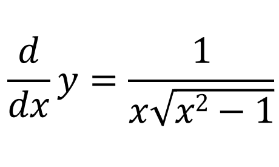

First lets start with a triangle where one of the angles is y. Lets say the hypotenuse side is of length x and that the adjacent side is of length 1:
Using the triangle above, we can say:
We already know that the derivative of x with respect to x is 1:

Since x = sec(y):

Using the chain rule:
And we already know what sec(y) and tan(y) is equal to:
